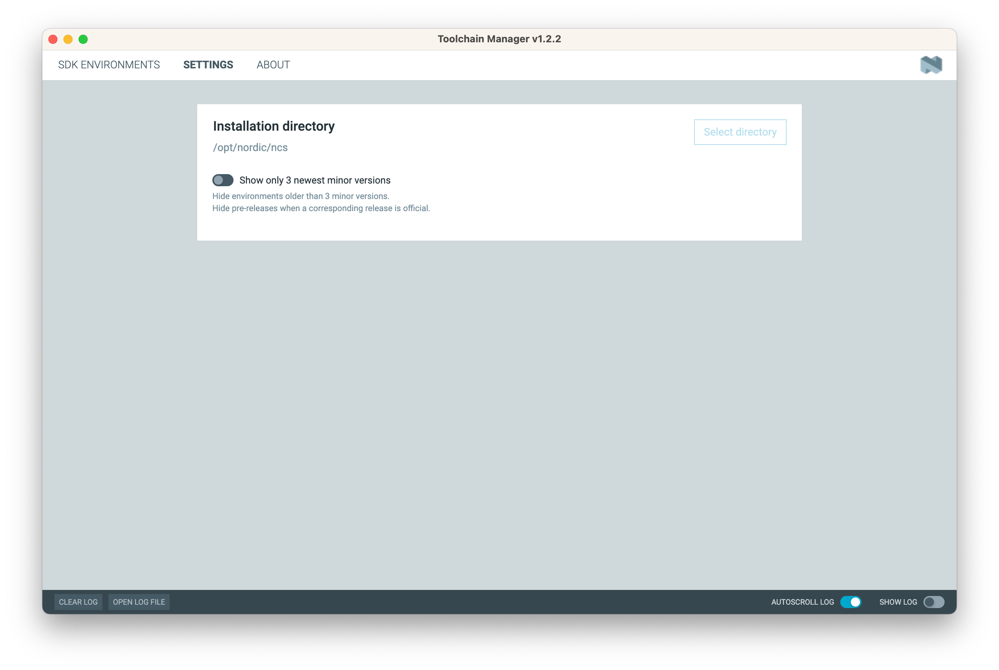

CaaM Application Framework
The CaaM Application Framework (UAF) provides a comprehensive set of APIs to accelerate the development of IoT applications, with built-in connectivity to the Embever IoT Core. This framework simplifies sending telemetry data to the cloud by offering easy-to-use APIs, reducing the complexity of implementing connectivity, secure communication, and other critical IoT tasks.
To learn more about the User Application Framework API, refer to the UAF API Documentation.
Sending Telemetry Data to the Cloud Using UAF
This quick start guide demonstrates how to send device telemetry to the cloud. The Embever IoT Core Browsable API will be used to view the telemetry data.
Prerequisites
Ensure the following requirements are met to complete this guide:
- An activated account for the Embever IoT Core. See Creating an Embever IoT Core Account.
- A supported hardware device with an Embever-provided SIM card. See Supported hardware devices.
- Visual Studio Code installed on the development machine (optional but recommended).
Sign In to Embever IoT Core Browsable API
Sign in to the Embever IoT Core Browsable API. Keep the portal open while following this guide.
Ensure the SIM Card Is Allocated to the Correct Organization
To list available SIM cards, go to the SIM resource endpoint. Verify that the SIM card used by the CaaM device is listed and activated. The iccid attribute of the SIM resource should match the ICCID of the physical SIM card in the CaaM device.
Create a Device in the Embever IoT Core
A device instance in the Embever IoT Core represents a single physical IoT device.
Note
If the CaaM Development Kit was provided by Embever, the device may already be created in the Embever IoT Core. To check available devices, go to the Devices API Endpoint. If the device is listed, skip this section.
The simplest way to create a device is by using the Browsable API, though other tools like Postman or curl can also be used. This guide will use the Browsable API to perform the task.
- Visit the Devices API Endpoint. Ensure that the correct account credentials are used.
- Scroll to the bottom of the page to find a form for inputting device data. Both HTML and raw input formats are available for initiating a POST request to create a new device. The raw data format will be used in this example.
- Set the media type field to
application/json. -
In the content field, input the following data:
{ "name": "<your_device_name>", "activated": true, "sims": ["<iccid_of_sim>"] }Replace
<your_device_name>with a unique name for the device (names should be unique within the organization). Replace<iccid_of_sim>with the ICCID of the SIM card used by the CaaM device. -
Click the
POSTbutton. This will create a device in the Embever IoT Core. A similar object will be returned:{ "url": "https://api.embever.com/v2/devices/4w4QD/", "id": "4w4QD", "name": "<your_device_name>", "password": "**********************", "activated": true, "application": null, "webhooks": null, "meta": null, "sims": ["<iccid_of_sim>"], "created_at": "2024-06-14T07:37:23.361080Z" }
Once the device is created, it is ready to receive telemetry data from the CaaM device.
Run the Sample Application
The CaaM Application Framework simplifies and accelerates IoT product development by providing essential IoT functionalities out of the box. These include telemetry data transfer, file transfers, firmware updates, and more. The framework handles complex connectivity, protocol management, and security implementations, allowing the focus to remain on building the application. For more details, refer to the CaaM Application Framework.
Step 1: Setting Up the Software Development Environment
Setting up the software development environment starts with the nRF Connect SDK installation, follow the official guide written by the Nordic Semiconductor team here. Choose the nRF Connect SDK version 2.2.0 from the Toolchain Manager.
Note
If this version is not listed on the Toolchain Manager, change the setting of the application based on the screenshot below.

Note
If the mentioned SDK version is not listed, turn off the “Show only 3 newest minor version” option on the Toolchain Manager settings page.
To exploit all the possibilities of the development experience, review this page as well. To verify the local development environment, try to compile and upload one of the nordic sample application.

Step 2: Get a Local Copy of the Embever User Application Framework Template
To obtain a local copy of the CaaM User Application Framework template, clone the repository or download the distributed archive.
Note
This repository contains submodules necessary for its operation.
Use the following command to ensure that the submodules are downloaded:
git clone --recurse-submodules git@github.com:Embever/ebv_UAF_template.git

Step 3: Working with the UAF Template
To work with the UAF template, follow these steps to set up the environment and prepare the application for development:
- Open Visual Studio Code: Once the repository is cloned, open Visual Studio Code.
- Import the UAF Template: Import the cloned UAF template into the workspace.
To start working with the UAF template, open the nRF Connect SDK IDE, which is the Visual Studio Code with the Nordic nRF Connect SDK plugin. To do that, click on the "Open VS Code" button in the nRF Connect Desktop Toolchain Manager. Importing the UAF template is as simple as clicking to the Open Application button after selecting the nRF Connect extension tab on the sidebar in VS Code.

Opening the UAF template as and existing application by the Open Application button As the application opened successfully, the next step is to define a build target


Build configuration successfully defined, SDK and toolchain version set to 2.2.0
Step 4: Crypto Keys for Binary Encryption
To secure firmware, generate cryptographic keys for binary encryption. Follow the steps below to set up the necessary keys:
To embed secure firmware update into the deployment process, the firmware binary has to be signed with a unique key. Ignoring this option and using the default keys of the SDK is not forbidden for internal development, but as soon as the firmware pass the development stage, it is recommended to use a custom keys to maintain security.
Note
To use the default keys to sign the firmware binaries, remove ( or make the line begin with the # sign to disable it) the following line in the mcuboot.conf file.
CONFIG_BOOT_SIGNATURE_KEY_FILE="fota-keys/nRF9160/dev/mcuboot-ec-p256.pem"
To generate a custom signing keys, follow this guide written by the Nordic Semiconductor team.
The newly generated keys can be places to any location and they can be referenced with they absolute path. Using a relative path is also possible ( like the default value of the CONFIG_BOOT_SIGNATURE_KEY_FILE ). In this case the base directory of this relative path is the following location:
<nrf_sdk_base>/<version_number>/bootloader/mcuboot
As an example, the absolute location of the signing key is : /opt/nordic/ncs/v2.2.0/bootloader/mcuboot/fota-keys/nRF9160/dev/mcuboot-ec-p256.pem
Step 5: Compiling and Flashing
Once the crypto keys are set up, proceed with compiling and flashing the firmware onto the CaaM device:
- Compiling: Use the build tools in Visual Studio Code to compile the project.
- Flashing: After the compilation is complete, the firmware binaries are ready to be flashed to the CaaM device. This can be done by selecting the "Flash" option in the sidebar.
Note: Depending on the specific CaaM device being used, the flashing process may differ. For example, the CaaM Mini does not have a built-in programmer, so an external programming tool must be used. For more details, see the CaaM-OS Hardware Compatibility page.
Step 6: The Dash Button Sample Application
The UAF template includes several sample applications located in the ./samples folder. The dash button sample application will be used to demonstrate sending telemetry data to the cloud.
-
Add a Build Configuration: Edit the existing build configuration or create a new one, as shown in the screenshots below:


-
Select the Dash Button Application: Add the following CMake argument to select the Dash Button sample application:
-DUSER_APPLICATION="dash_button" -
Build and Flash: After configuring, build the project and flash the application binary. Once flashed, the status LED on the device should turn on, indicating that the application is running. For development purposes, it is recommended to view the logs generated by CaaM-OS. To learn more about accessing the log messages, refer to the CaaM-OS Logs section.
The CaaM-OS will complete the telemetry data transfer when the status LED begins blinking. For further explanation of the Dash Button sample application, refer to the Dash Button Sample Application for the CaaM Application Framework article.
Step 7: Viewing Telemetry Data in the Embever IoT Core Browsable API
After the CaaM device sends telemetry data, the data can be viewed in the Embever IoT Core using the Browsable API. Follow these steps:
- Open the Browsable API: Visit
https://api.embever.com/v2/events/?device=<your_device_id>to access the telemetry data. - Replace
<your_device_id>: Substitute<your_device_id>with the actual ID of the CaaM device.
Telemetry data is represented as events. Each event object contains a type, which denotes a specific occurrence on the device, and a payload, which includes additional details about that occurrence. Below is an example of telemetry data sent by a device:
[
{
"url": "https://api.embever.com/v2/events/123456/",
"id": 123456,
"device": "my-test-dev",
"sim": "8988XXXXXXXXXXX",
"type": "samples",
"payload": {
"temp": 20
},
"created_at": "2024-06-05T14:44:38.497395Z"
}
]
The Embever IoT Core makes it easy to forward telemetry data to other cloud applications. For more details, refer to the following guides:
- How to send data from the Embever IoT Core to other applications,
- Integration with Salesforce,
- Integration with Azure IoT Hub